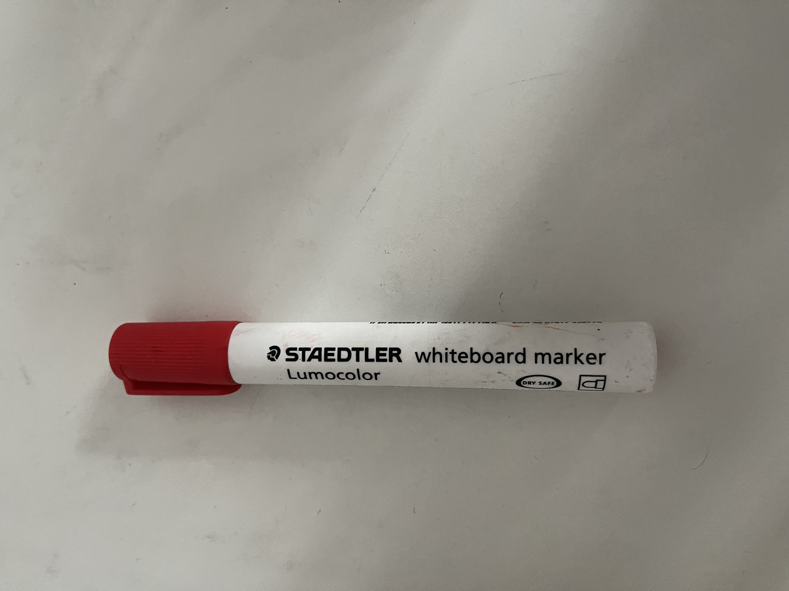
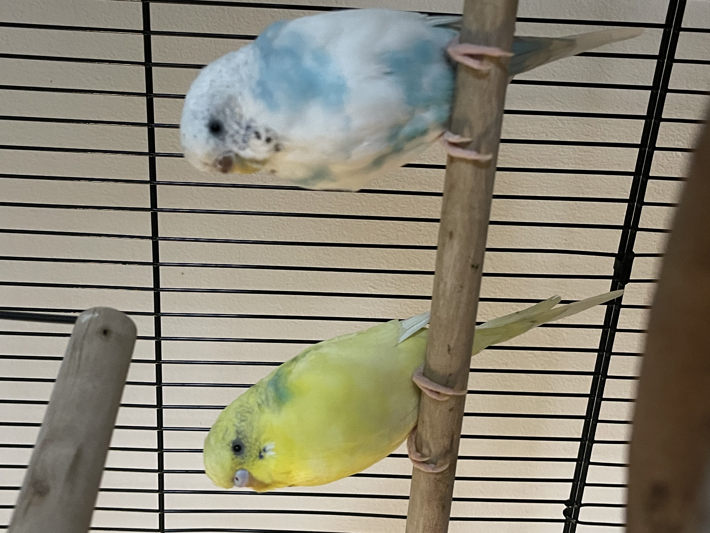

Case Study
We are going to compare Mobilenet and Google Lens
Mobilenet model
Google Lens
Test Image -

Output on Google Lens -
Output on Mobilnet model -
Result-
I would say Google Lens was more accurate in identifying the object in this case.
Mobilnet gave the answer of a 'missile', however Google Lens gave th correct answer of a red marker.
Test Image -
Output on Google Lens -
Output on Mobilnet model -
Result-
I would say Google Lens was more accurate in identifying the object in this case.
Mobilnet gave the answer of a 'feather boa,boa', however Google Lens gave the correct answer of Mockingjay, a book by Suzanne Collins.
Test Image -

Output on Google Lens -
Output on Mobilnet model -
Result-
I would say Google Lens was more accurate in identifying the birds in this case.
Mobilnet gave the answer of a 'throne', however Google Lens gave the correct answer of a budgeriar.
In conclusion, Google Lens is far more accurate than Mobilnet